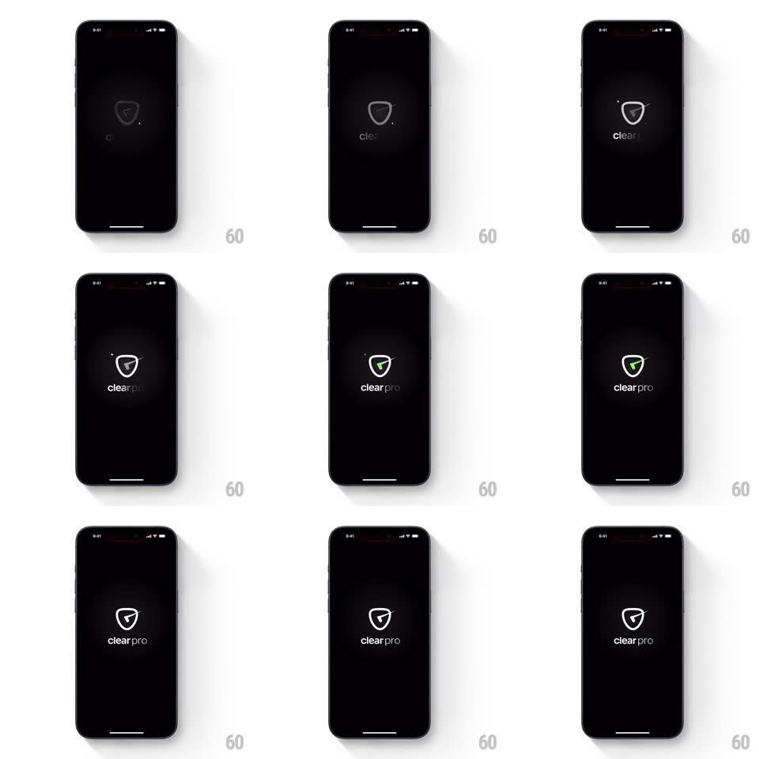

Media
Frame-by-frame

Rebuild this animation 1:1: ClearPro's splash - on black, a shield outline draws itself, the wordmark types in, and a green checkmark strokes into the shield to complete the logo.

Rebuild this animation 1:1: ClearPro's splash - on black, a shield outline draws itself, the wordmark types in, and a green checkmark strokes into the shield to complete the logo. ## Integration Integration: stack-agnostic spec - springs given as stiffness/damping, timed motions as duration + curve; map every value to your framework and animation library of choice. ## Scene Pure black screen. At center, the ClearPro shield: a rounded inverted-shield outline that draws in, the "clearpro" lowercase wordmark below it, and finally a green checkmark drawing inside the shield. A small lens-flare sparkle accents the shield's upper edge. ## Motion spec Pattern: sequential line-drawing logo build. - Shield outline (0-800ms): the stroke draws clockwise from the top (stroke-dashoffset animation, 800ms, ease-in-out), a bright comet head traveling with the draw point and a soft glow trailing it. - Wordmark (500-1100ms): "clearpro" letters fade in left to right (40ms per letter, opacity 0 to 1 with a 2px upward drift), overlapping the shield's draw tail. - Checkmark (1100-1700ms): the green check strokes in - down-stroke then up-stroke (each 250ms, ease-out), with a green glow bloom at completion (shadow radius 0 to 18px and back to 8px, 400ms) and a sparkle burst at the shield's top-left edge (4-point star scaling 0 to 1 to 0, 350ms). - Hold (1700ms+): the completed logo breathes once (scale 1 to 1.02 to 1, 500ms), then the whole splash crossfades to the app (400ms). ## Calibration - The check is the payoff: saturated green, thicker stroke than the shield outline, slightly overshooting the shield's vertical center. - Total sequence ~2.2s; skippable on tap after the wordmark completes. ## Reduced motion Logo fades in fully formed. ## Don't miss - Everything is stroke-drawn, not opacity-faded shapes - the drawing order (shield, wordmark, check) is the story. - The sparkle is a single small accent; don't scatter particles.